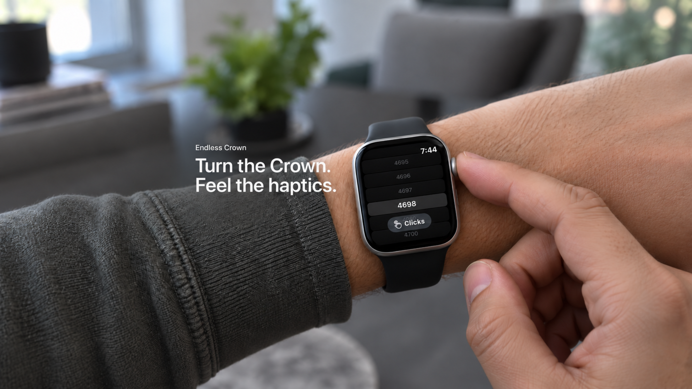
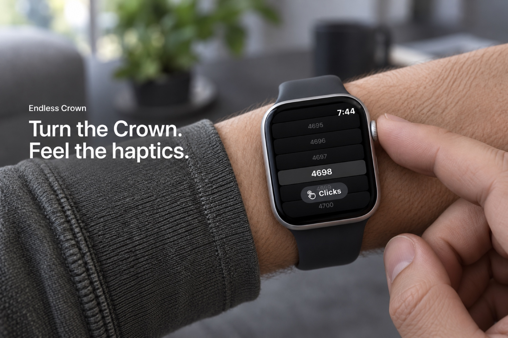

C artwork without canvas bands
Waiting for Review. The existing public artwork remains live until the replacements are approved.
Header v4

5244 × 2950 opaque PNG. Apple iPhone and iPad reference crop checks passed.
Search v3

1920 × 1280 opaque JPEG. No top/bottom letterbox padding.
Delivery record · Exact imagegen prompts · Previous published v2 reference